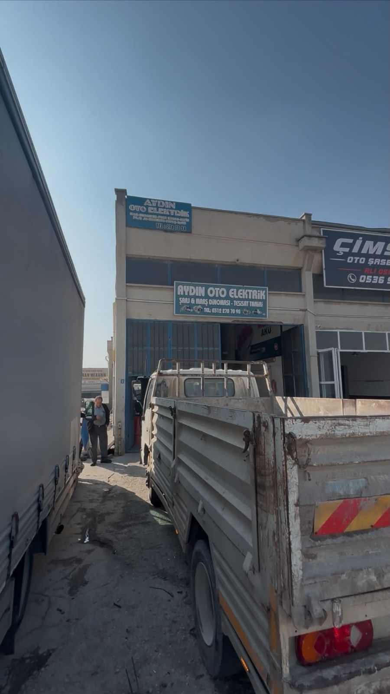
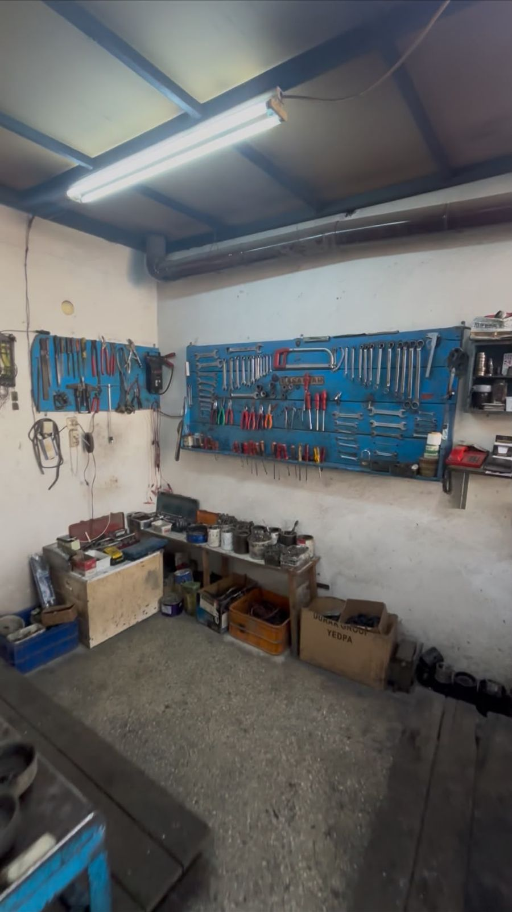
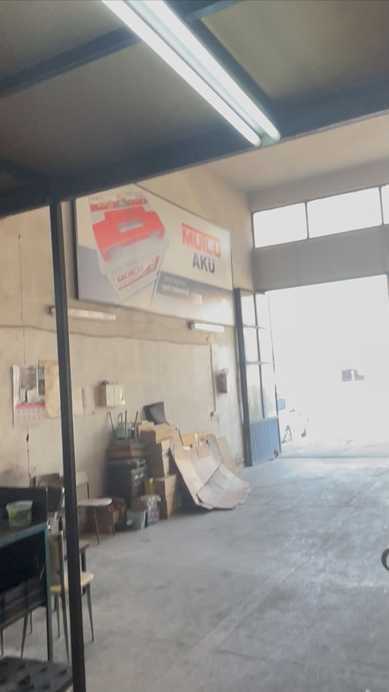

Mutlu ve Esan akü, marş ve şarj dinamosu, ampul satışı. Dinamo tamiri ve oto elektrik arıza tespiti. Binekten ağır vasıtaya kadar tüm araçlara hizmet veriyoruz.
Güncel fiyat ve stok için arayabilir ya da WhatsApp'tan yazabilirsiniz.
Aydın Oto Elektrik, 40 yılı aşkın süredir oto elektrik alanında hizmet veriyor. Etimesgut Dökmeciler Sanayi Sitesi'ndeki dükkânımızda binek araçtan kamyona, traktörden iş makinesine kadar her tür aracın elektrik sorununa çözüm üretiyoruz.
Uzmanlık alanımız marş ve şarj dinamoları. Dinamoların tamiri, bakımı, revizyonu ve montajını kendi atölyemizde yapıyoruz. Arızayı doğru tespit edip yalnızca gereken parçayı değiştiriyor, dinamo tamirini aynı gün teslim ediyoruz.
Dinamo işlerinin yanında kalorifer peteği değişimi, kalorifer motoru tamiri ve değişimi, bunlar için gereken araç göğsü (torpido) söküm ve montajını da yapıyoruz.
Mutlu Akü bayisi olarak akü satışı ve montajının yanında akü testi, şarjı ve bakımını da yapıyoruz. Yüzlerce çeşit yedek parça stoğumuz sayesinde çoğu işi aynı gün teslim ediyoruz.



Çalışmayan, tık tık eden ya da zor çeviren marş motorlarının tamiri, otomatik ve bendiks değişimi.
Şarj etmeyen ya da şarj ışığı yanan alternatörlerde konjektör, rulman, diyot ve kömür değişimi.
Akü testi, şarj sistemi ölçümü, kaçak akım tespiti ve yerinde akü değişimi.
Elektrik arıza tespiti, tesisat, far, ampul, sigorta ve röle onarımı.
Kalorifer peteği değişimi, kalorifer motoru tamiri ve değişimi, araç göğsü (torpido) söküm ve montajı.
Şarj ışığı genellikle şarj dinamosu (alternatör), konjektör ya da kayış kaynaklı bir arızayı gösterir. Akü bir süre aracı idare eder ama kısa sürede boşalır. En kısa zamanda dükkânımıza getirin, şarj sistemini ölçüp arızayı aynı gün tespit edelim.
En sık sebepler zayıf akü, gevşek ya da oksitlenmiş kutup başı, marş otomatiği veya marş kömürlerinin aşınmasıdır. Önce aküyü test ediyor, ardından marş dinamosunu söküp kontrol ediyoruz; çoğu zaman tamirle çözülür, komple değişim gerekmez.
Kullanıma ve iklime bağlı olarak binek araçlarda genellikle 3–5 yıl. Sık kısa mesafe sürüş, uzun süre park ve şarj sistemindeki arızalar ömrü kısaltır. Akünüzü dükkânımızda test edip durumunu söyleyebiliriz.
Doğru akü; aracın motoruna, Start-Stop olup olmamasına, kutu ölçüsüne ve kutup yönüne göre seçilir. Ruhsat bilgisi ya da mevcut akünün etiketiyle bize yazın, uygun Mutlu aküyü söyleyelim ve montajını yapalım.
Marş ve şarj dinamosu tamirini aynı gün teslim ediyoruz. Geniş yedek parça stoğumuz sayesinde aracınız beklemeden yola çıkar.
Evet. 12V ve 24V sistemlerde binek araçtan kamyon, otobüs, traktör ve iş makinesine kadar her tür aracın marş, şarj ve elektrik tesisatı işini yapıyoruz.